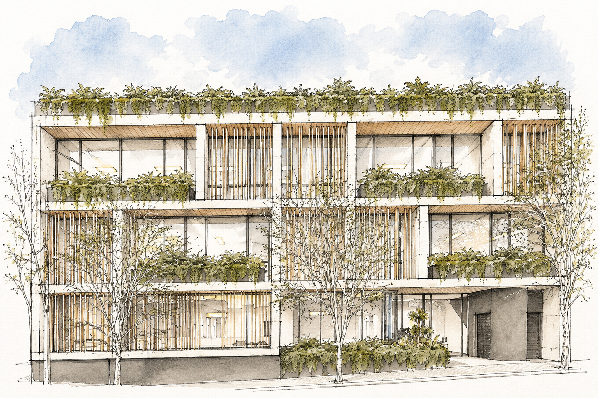
A mixed-use development designed to complement the character of the neighbourhood, offering a new standard of urban living with everything at its doorstep.
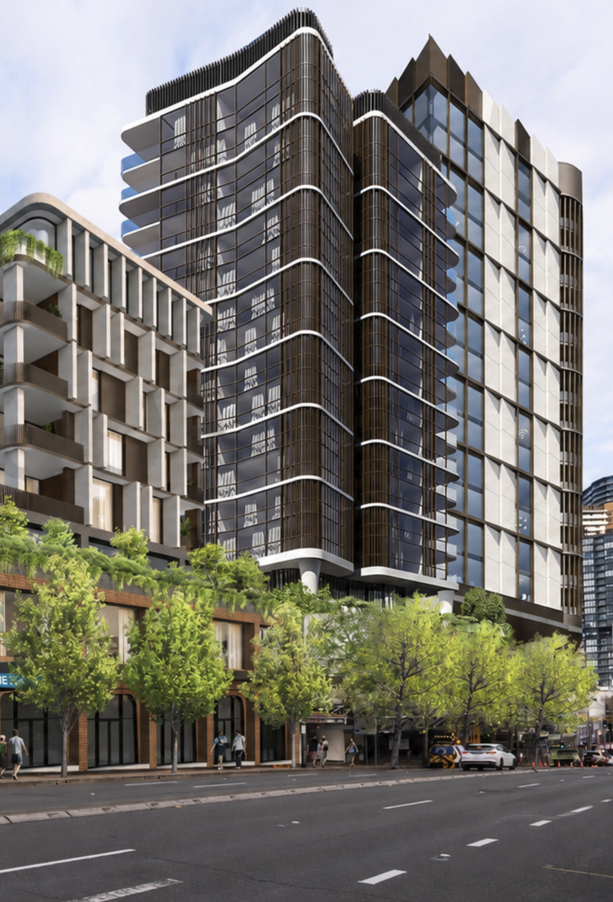
A landmark development of three towers opposite Crows Nest Metro, bringing contemporary architecture and vibrant urban amenity.
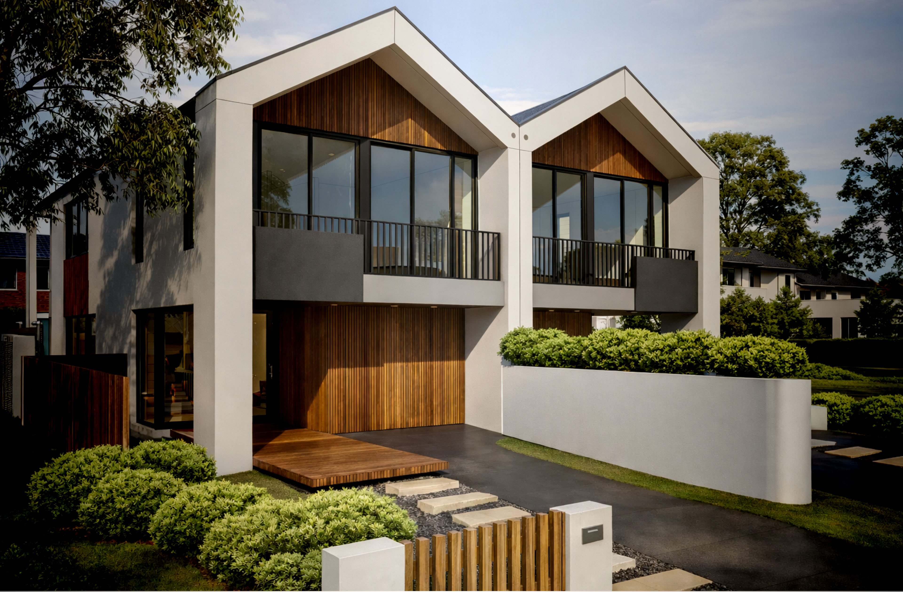
An exclusive release of 10 architecturally designed dual occupancies in Frenches Forest, delivered in collaboration with MHDP.
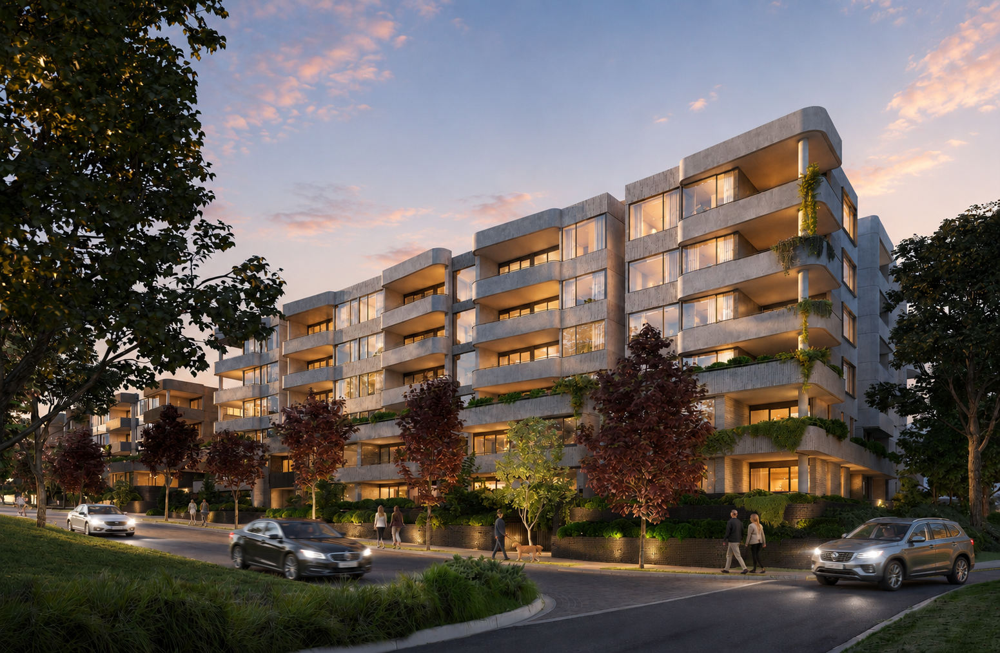
Currently under construction, a collection of 115 house-size apartments in Forest Hill. Architecture by SJB, landscape by Jack Merlo.
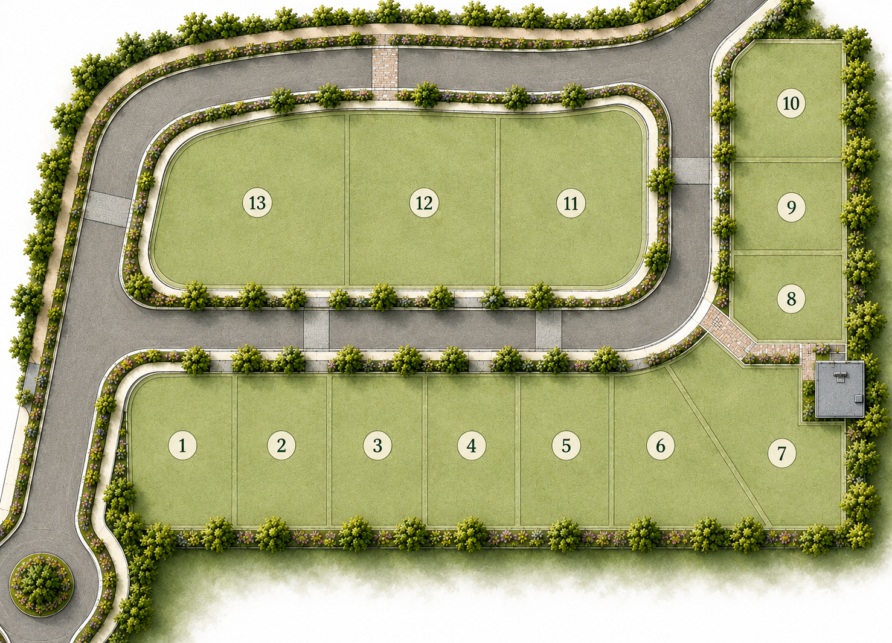
A boutique collection of 13 homes surrounded by natural beauty and established amenity, bringing together space, lifestyle and coastal living.
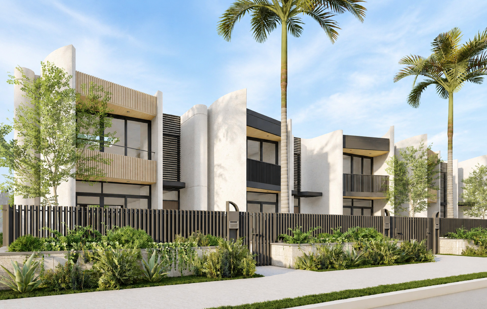
A thoughtfully planned 47-lot estate combining contemporary townhouses, quality architecture and a strong Northern Beaches connection.

An exclusive luxury home enclave featuring a collection of architecturally designed homes set on large, private lifestyle lots in Turramurra.
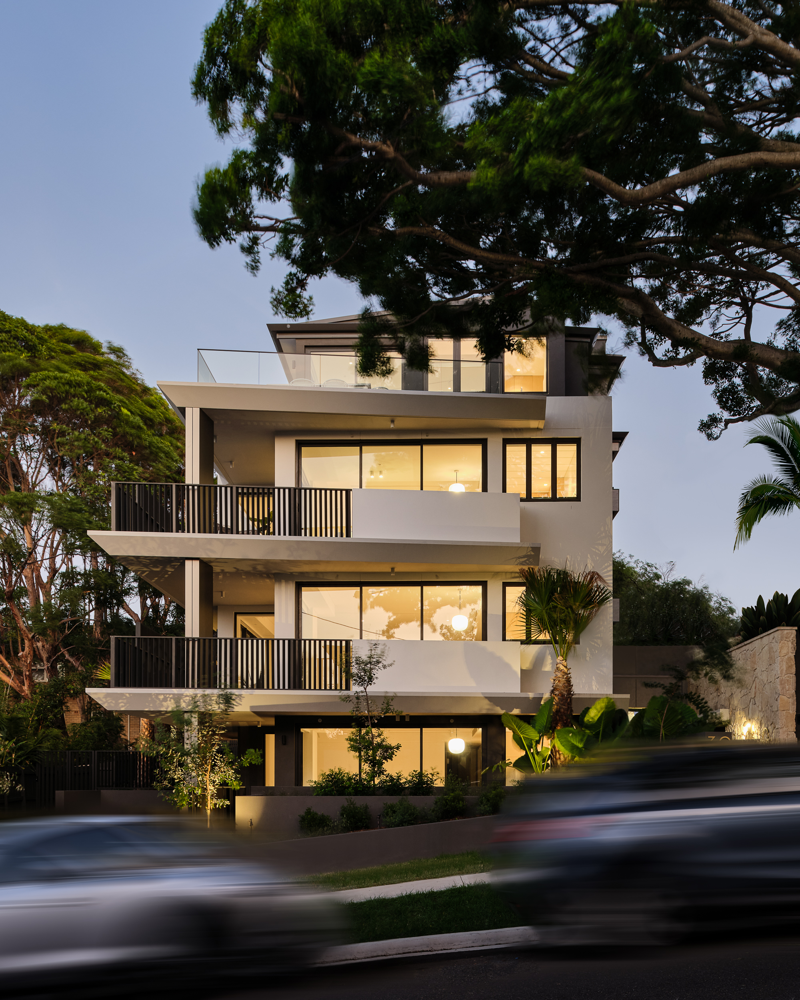
Full-floor beachside apartments in the heart of Narrabeen, with architecture by Mark Hurcum Design Practice and interiors by X.Pace Design.
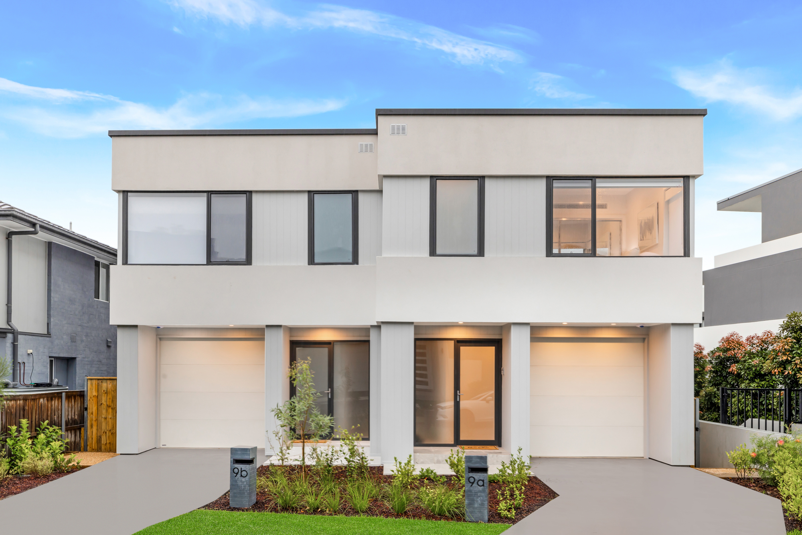
A limited release of land and dual occupancies in the heart of Warriewood, moments from the coast and local village amenity.
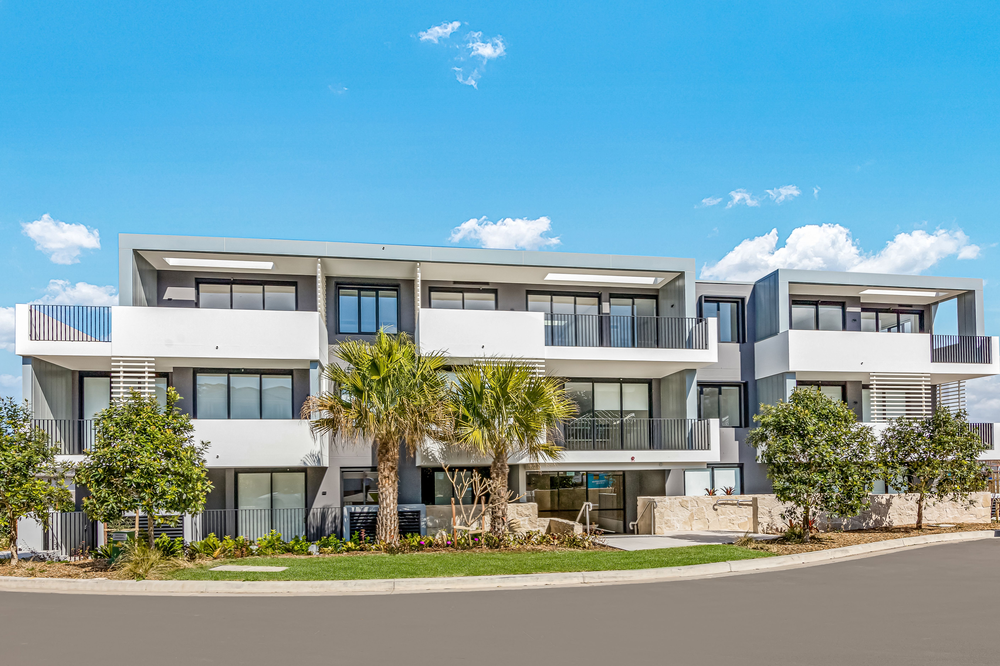
A curated collection of coastal residences designed to embrace relaxed living, refined interiors and a seamless connection to the landscape.
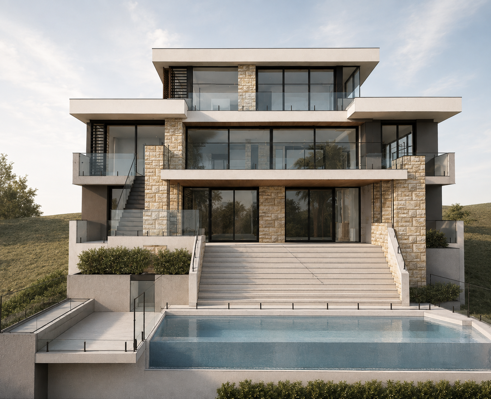
A once-in-a-lifetime coastal offering, positioned at the highest point above Bungan Beach, Newport, with sweeping ocean views.
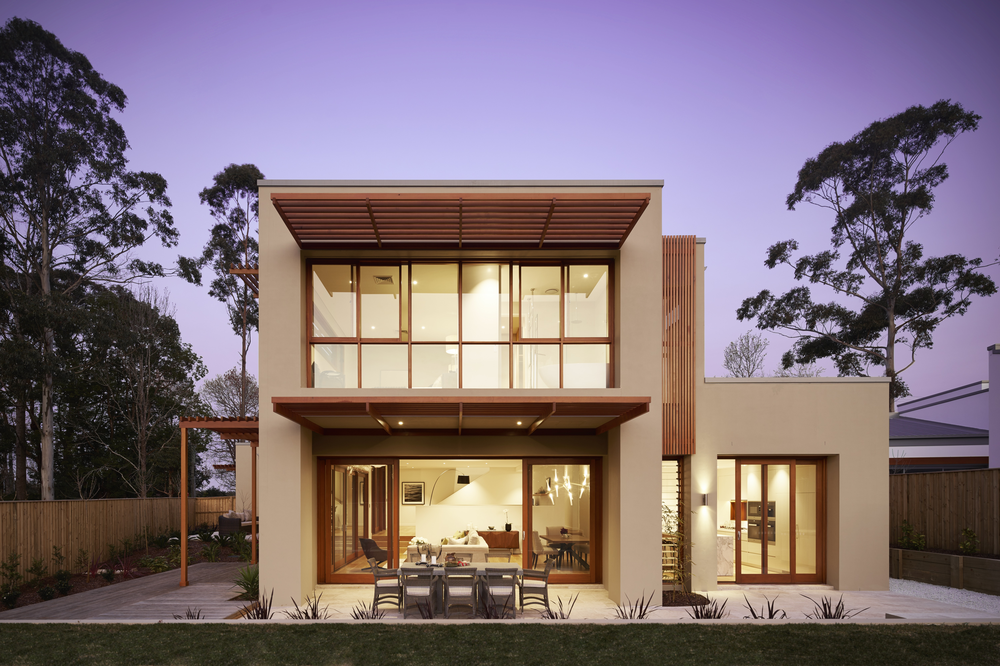
Glengarry Turramurra affords its residents a sophisticated lifestyle within a family-friendly setting, bordering Ku-ring-gai Chase.
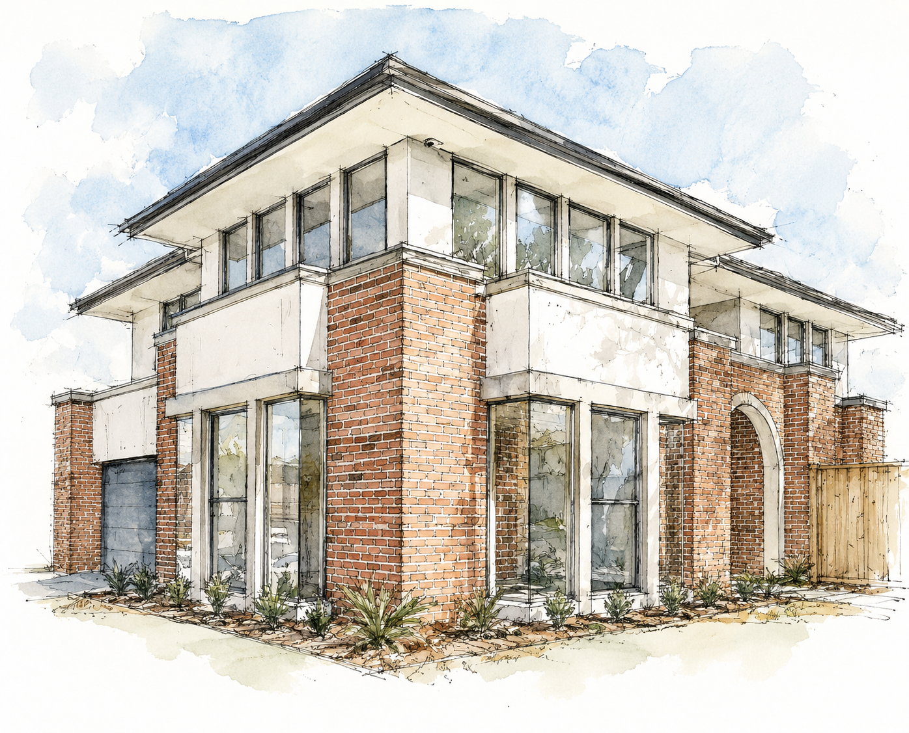
A boutique development of 24 homes on large 700sqm blocks, bringing a new standard to an established Northern Beaches suburb.
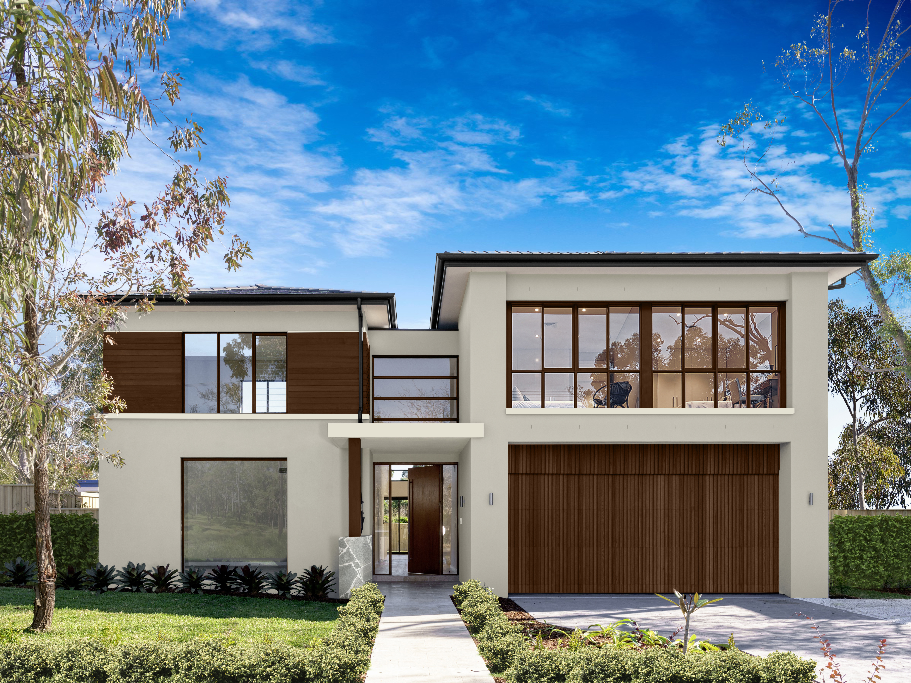
A project of 17 architecturally inspired homes in the heart of family-oriented Belrose, on the Northern Beaches.